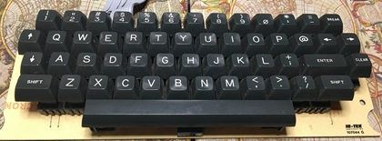
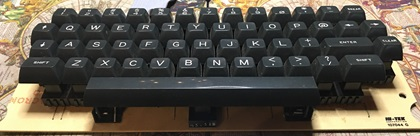

2/9/2024 12:45 AM: -- Snagging CoCo1 Computers with Aftermarket Keyboards

I have never owned one but have been a fan of the CoCo1 aftermarket keyboard for years, but they rarely seem to come up for sale on eBay. While I haven't been monitoring eBay daily for years, I do remember there being about three different aftermarket keyboards: the Hi-Tek, the HJL-57, and a third one that I recall having very dark gray keys, although I could be mistaken.
Recently, my patience and persistence paid off when I spotted a CoCo1 with 32k memory and a Hi-Tek aftermarket keyboard for sale on eBay. The asking price was $179 with free shipping, and there was also a "make offer" option. I decided to make an offer of $140, which was accepted, plus an additional $10 for taxes. The CoCo1 has a revision D motherboard, but it's missing the transformer, so I haven't been able to test the computer yet. However, since I already own two other CoCo1's, I mainly bought it for the keyboard.

Just a few days later, another CoCo1 with the same aftermarket keyboard appeared for auction. I decided to try the snipe strategy in the last seconds of the auction and managed to win it for $103. This CoCo1 has a 16k memory and a type E motherboard, but it has a broken power button.
In the span of just one week, I was able to snag two CoCo1 computers with the Hi-Tek keyboard. While it may not have been necessary to buy both, I was concerned that if one was badly broken, I would at least end up with one working keyboard. I have bought silicone oil and contact cleaner to clean up both keyboards and make them work like new again.
I am also excited to experiment with hooking them up to an FPGA for a CoCo FPGA project I am working on. These purchases have not only added to my collection but also opened up new possibilities for my electronics projects.